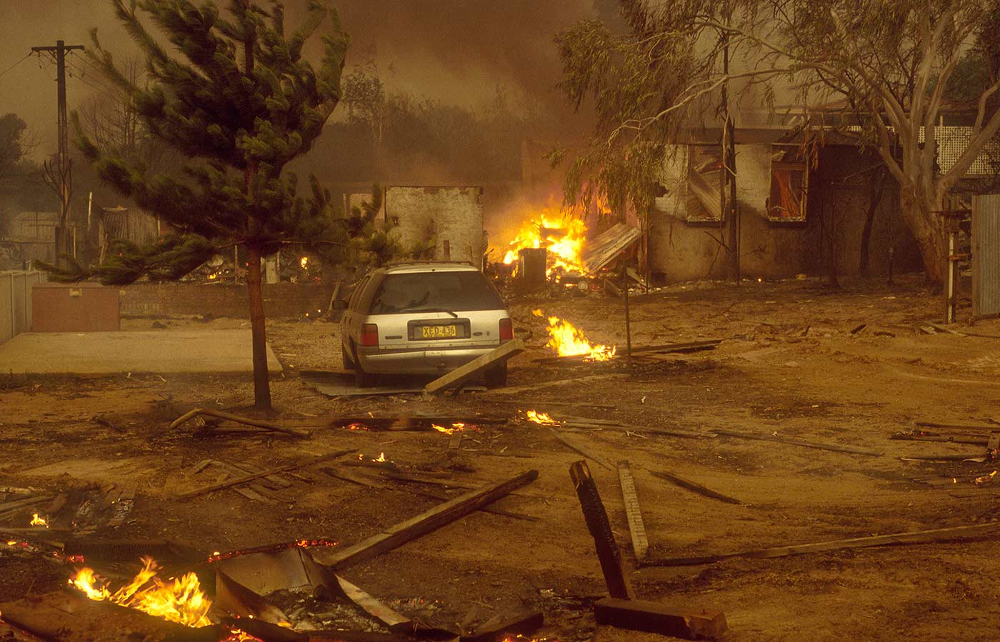
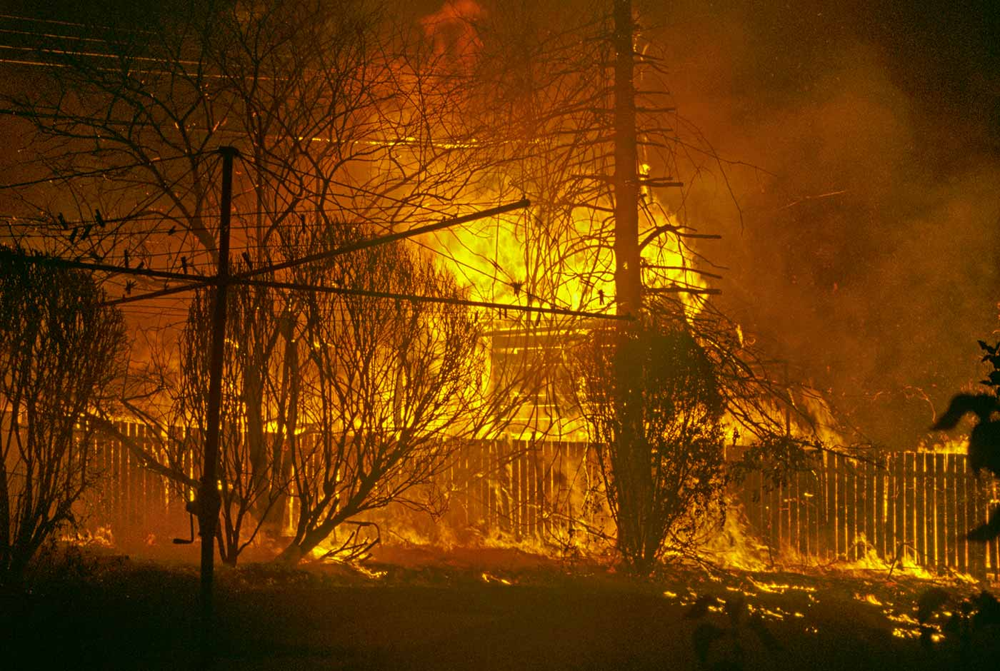
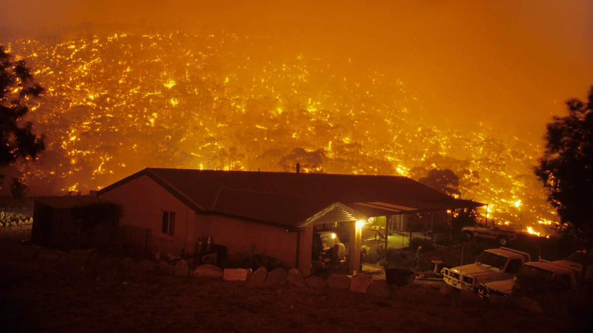
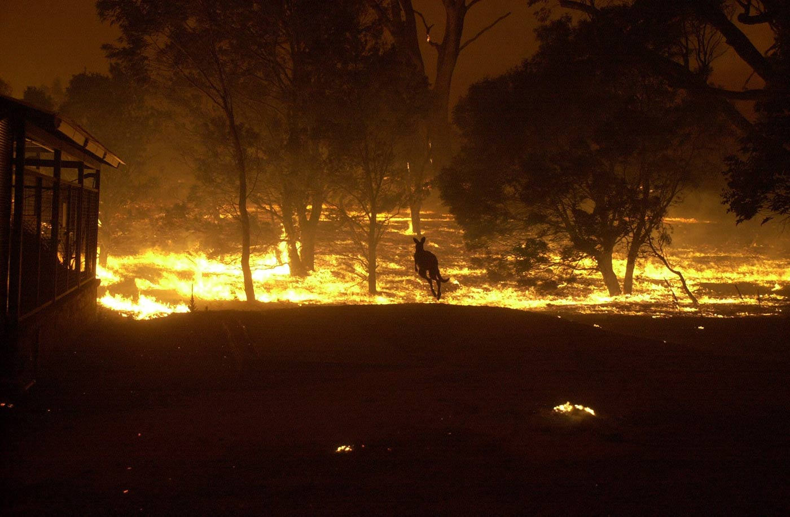

The Canberra Firestrom
The morning of Saturday 18 January 2003 was hot, windy and dry. Temperatures as high as 40 °C (104 °F) and winds exceeding 80 kilometres per hour (55 miles per hour), plus a very low relative humidity, were the main weather features of the day.
Two fires continued to burn out of control in the Namadgi National Park, with the entire park, along with the Tidbinbilla Nature Reserve, being closed due to the threat. A second fire, in the Brindabella Ranges, was threatening to break containment lines.The McIntyres Hut fire crossed the border into the ACT. By midday it had entered the Uriarra pine plantation.
By 9 am on the morning of Saturday 18 January, burned leaves appeared on lawns in houses in the Weston Creek, Kambah, and Tuggeranong suburbs bordering the western extremity of Canberra. By 10 am, news helicopters were overflying Duffy and reporting news of the fires interstate and internationally, but no news was available locally.
The first public emergency warning was broadcast about 2.40pm, listing the Weston Creek suburbs of Duffy, Rivett, Chapman and Holder as most at risk.
By 2.30pm the McIntyres Hut fire crossed the Murrumbidgee River, starting a spot fire in the Stromlo pine plantation west of the Mount Stromlo Observatory.
At 2.45pm the fire raced up the western slopes of Mount Stromlo, before merging with the Bendora fire. The flames were visible from north Canberra.
At 2.45pm the ACT Chief Minister, Jon Stanhope, declared a state of emergency. About 15 minutes later the firestorm hit the suburb of Duffy. Over the next few hours it devastated houses in the suburbs of Holder, Weston, Chapman, Rivett and Kambah.
By 5 pm, houses were reported destroyed in Duffy, Chapman, Kambah, Holder, and Rivett, as well as in the small forestry settlement of Uriarra. It was later found that the first casualty of the fires, an elderly woman named Dorothy McGrath, had died at the nearby Stromlo Forestry Settlement.[13] Escape for residents was hampered by poor warning and by the settlement's location, surrounded by the pine forest. Fires in the Michelago area forced the closure of the Monaro Highway into Canberra. Fires spread through the Kambah Pool area and into the suburb of Kambah, causing damage to many homes and one of the ACT's primary Urban and Rural fire stations.
The fires overwhelmed firefighters and caused a power and communications blackout. In the ensuing confusion and panic, thousands of residents fled the burning suburbs in their cars. Others stayed, desperately trying to protect their homes. Canberra Hospital was overrun with people suffering burns and smoke inhalation.
An unprecedented fire tornado left a trail of destruction in the Uriarra and Pierces Creek pine plantations and caused severe wind and fire damage, particularly in the suburbs of Chapman and Kambah.
Shortly after 7pm a cool wind change eased the immediate fire danger.On 19 January weather conditions eased further and authorities declared all ACT fires under control.

A property burning in Kambah, Canberra, 18 January 2003.
Photo: Jeff Cutting
An incinerated backyard in Kambah, 18 January 2003. Photo: Jeff Cutting
Photo: Jeff Cutting

Eucalypt forests around Canberra had been desiccated by years of drought and once the fires took hold, they were impossible to contain.
Photo: Jeff Cutting

A kangaroo flees the Canberra bushfires, January 2003.
Photo: Mark Graham.
News Limited

Mount Stromlo Observatory, 19 January 2003
News Limited
❮
❯


{kind=link}
{kind=link}
{kind=link}
{kind=link}